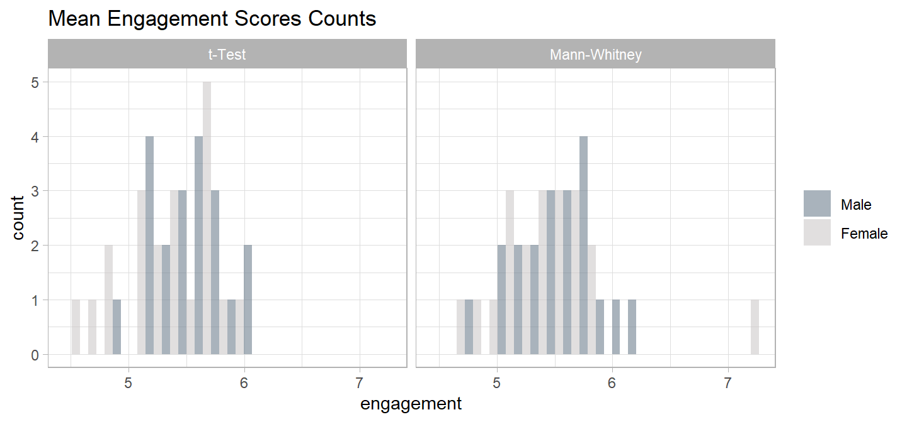
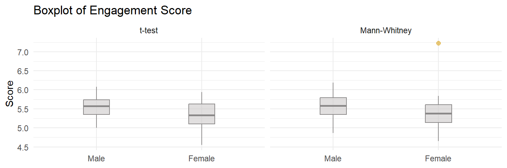
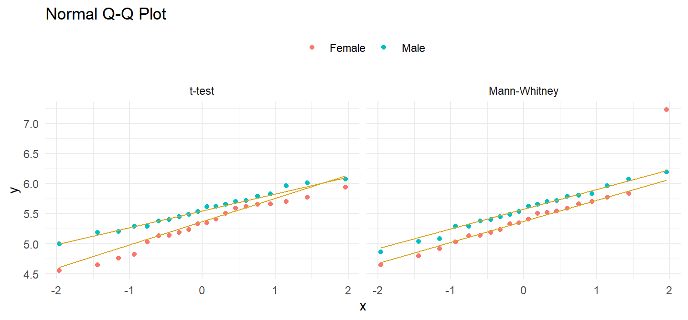
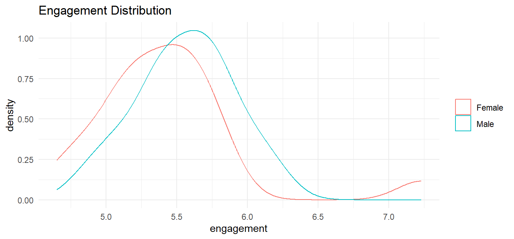

5 Continuous ~ Binomial
5.1 Independent Samples t-Test
If a population measure X is normally distributed with mean \(\mu_X\) and variance \(\sigma_X^2\), and a population measure Y is normally distributed with mean \(\mu_Y\) and variance \(\sigma_Y^2\), then their difference is normally distributed with mean \(d = \mu_X - \mu_Y\) and variance \(\sigma_{XY}^2 = \sigma_X^2 + \sigma_Y^2\). By the CLT, as sample sizes grow, non-normally distributed X and Y approach normality, and so do their difference.
The independent samples t-test compares an hypothesized difference, \(d_0\) (H0: \(d = d_0\)), with a sample means difference, \(\hat{d} = \bar{x} - \bar{y}\), or constructs a (1 - \(\alpha\))% confidence interval around \(\hat{d}\) to estimate \(d\) within a margin of error, \(\epsilon\).
In principal, you can evaluate \(\hat{d}\) with either a z-test or a t-test. Both require independent samples and approximately normal sampling distributions. Sampling distributions are normal if the underlying populations are normally distributed, or if the sample sizes are large (\(n_X\) and \(n_Y\) \(\ge\) 30). However, the z-test additionally requires known sampling distribution variances, \(\sigma^2_X\) and \(\sigma^2_Y\). These variances are never known, so always use the t-test.
The z-test assumes \(d\) is normally distributed around \(\hat{d} = d\) with standard error \(SE = \sqrt{\frac{\sigma_X^2}{n_X} + \frac{\sigma_Y^2}{n_Y}}.\) The test statistic for H0: \(d = d_0\) is \(Z = \frac{\hat{d} - d_0}{SE}\). The (1 - \(\alpha\))% CI is \(d = \hat{d} \pm z_{(1 - \alpha {/} 2)} SE\).
The t-test assumes \(d\) has a t-distribution around \(\hat{d} = d\) with standard error \(SE = \sqrt{\frac{s_X^2}{n_X} + \frac{s_Y^2}{n_Y}}.\) The test statistic for H0: \(d = d_0\) is \(T = \frac{\hat{d} - d_0}{SE}\). The (1 - \(\alpha\))% CI iss \(d = \hat{d} \pm t_{(1 - \alpha / 2), (n_X + n_Y - 2)} SE\).
There is a complication with the t-test SE and degrees of freedom. If the sample sizes are small and the standard deviations from each population are similar (the ratios of \(s_X\) and \(s_Y\) are <2), pool the variances, \(s_p^2 = \frac{(n_X - 1) s_X^2 + (n_Y-1) s_Y^2}{n_X + n_Y-2}\), so that \(SE = s_p \sqrt{\frac{1}{n_X} + \frac{1}{n_Y}}\) and the degrees of freedom (df) = \(n_X + n_Y - 2\) (the pooled variances t-test). Otherwise, \(SE = \sqrt{\frac{s_X^2}{n_X} + \frac{s_Y^2}{n_Y}}\), but you reduce df using the Welch-Satterthwaite correction, \(df = \frac{\left(\frac{s_X^2}{n_X} + \frac{s_Y^2}{n_Y}\right)^2}{\frac{s_X^4}{n_X^2\left(N_X-1\right)} + \frac{s_Y^4}{n_Y^2\left(N_Y-1\right)}}\) (the separate variance t-test, or Welch’s t-test).
5.2 Wilcoxon Rank Sum Test
The Wilcoxon rank sum test1 is a nonparametric alternative to the independent-samples t-test. Use the the test when the samples are not normally distributed or when the response variables are ordinal rather continuous. In the first case where the normality assumption fails, the test evaluates H0 that the two samples are from the same population distribution. In the second case where the response variables are ordinal, the test evaluates the difference in medians.
The Wilcoxon Rank Sum test ranks the response values, then sums the ranks for the reference group, \(W = \sum R_1\). The test statistic is \(U = W - \frac{n_2(n_2 + 1)}{2}\) where \(n_2\) is the number of observations in the test group. \(U\) will equal 0 if there is complete separation between the groups, and \(n_1 n_2\) if there is complete overlap. Reject H0 if \(U\) is sufficiently small.
5.3 Case Study
A company shows an advertisement to \(n_M\) = 20 males and \(n_F\) = 20 females, then measures their engagement with a survey. Do the groups’ mean engagement scores differ?
Laerd has two data sets for this example. One meets the conditions for a t-test, and the other fails the normality test, forcing you to use the Mann-Whitney U test.

The t-test data set has the following summary statistics.
(ind_num$t_gt <- ind_num$t_dat %>%
gtsummary::tbl_summary(
by = c(gender),
statistic = list(all_continuous() ~ "{mean} ({sd})")
))| Characteristic | Male N = 201 |
Female N = 201 |
|---|---|---|
| engagement | 5.56 (0.29) | 5.30 (0.39) |
| 1 Mean (SD) | ||
There were 20 male and 20 female participants. Data are mean \(\pm\) standard deviation, unless otherwise stated. The advertisement was more engaging to male viewers, 5.56 (0.29), than female viewers, 5.30 (0.39).
The Mann-Whitney data set has the following summary statistics.
(ind_num$mw_gt <- ind_num$mw_dat %>%
gtsummary::tbl_summary(
by = c(gender),
statistic = list(all_continuous() ~ "{mean} ({sd})")
))| Characteristic | Male N = 201 |
Female N = 201 |
|---|---|---|
| engagement | 5.56 (0.35) | 5.43 (0.53) |
| 1 Mean (SD) | ||
There were 20 male and 20 female participants. Data are mean \(\pm\) standard deviation, unless otherwise stated. The advertisement was more engaging to male viewers, 5.56 (0.35), than female viewers, 5.43 (0.53).
Conditions
The independent samples t-test and Mann-Whitney U test apply when 1) the response variable is continuous, 2) the independent variable is binomial, and 3) the observations are independent. The decision between the t-test and Mann-Whitney stems from two additional conditions related to the data distribution - if both conditions hold, use the t-test; otherwise use Mann-Whitney.
- Outliers. There should be no outliers in either group. Outliers exert a large influence on the mean and standard deviation. Test with a box plot. If there are outliers, you might be able to drop them or transform the data.
- Normality. Values should be nearly normally distributed. The t-test is robust to normality, but this condition is important with small sample sizes. Test with Q-Q plots or the Shapiro-Wilk test for normality. If the data is very non-normal, you might be able to transform the data.
If the data passes the two conditions, use the t-test, but now you need to check a third condition related to the variances to determine which flavor of the t-test to use.
- Homogeneous Variances. Use pooled-variances if the variances are homogeneous; otherwise use the separate variances method. Test with Levene’s test of equality of variances.
If the data does not pass the first two conditions, use Mann-Whitney, but now you need to check a third condition here as well. The condition does not affect how to perform the test, but rather how to interpret the results.
- Distribution shape. If the distributions have the same shape, interpret the Mann-Whitney result as a comparison of the medians; otherwise interpret the result as a comparison of the mean ranks.
Checking for Outliers
Assess outliers with a box plot. Box plot whiskers extend up to 1.5*IQR from the upper and lower hinges and outliers (beyond the whiskers) are are plotted individually.

For the t test data set,
There were no outliers in the data, as assessed by inspection of a boxplot.
and for the Mann-Whitney data set,
There was one outlier in the data, as assessed by inspection of a boxplot.
If the outliers are data entry errors or measurement errors, fix or discard them. If the outliers are genuine, you have a couple options before reverting to the Mann-Whitney U test.
- Leave it in if it doesn’t affect the conclusion (compared to taking it out).
- Transform the variable. Don’t do this unless the variable is also non-normal. Transformation also has the downside of making interpretation more difficult.
Checking for Normality
Assume the population is normally distributed if n \(\ge\) 30. Otherwise, assess a Q-Q plot, skewness and kurtosis values, or a histogram. If you still don’t feel confident about normality, run a Shapiro-Wilk test.
There are only \(n_M\) = 20 male and \(n_F\) = 20 female observations, so you need to test normality. The QQ plot indicates normality in the t-test data set, but not in the Mann-Whitney data set.
bind_rows(
`t-test` = ind_num$t_dat,
`Mann-Whitney` = ind_num$mw_dat,
.id = "set"
) %>%
ggplot(aes(sample = engagement, group = gender, color = fct_rev(gender))) +
stat_qq() +
stat_qq_line(col = "goldenrod") +
theme_minimal() + theme(legend.position = "top") +
facet_wrap(~fct_rev(set)) +
labs(title = "Normal Q-Q Plot", color = NULL)
Run Shapiro-Wilk separately for the males and for the females. Since we are looking at two data sets in tandem, there are four tests below. For the t-test data set,
(ind_num$t_shapiro <- split(ind_num$t_dat, ind_num$t_dat$gender) %>%
map(~shapiro.test(.$engagement))
)$Male
Shapiro-Wilk normality test
data: .$engagement
W = 0.98344, p-value = 0.9705
$Female
Shapiro-Wilk normality test
data: .$engagement
W = 0.96078, p-value = 0.5595Engagement scores for each level of gender were normally distributed, as assessed by Shapiro-Wilk’s test (p > .05).
For the Mann-Whitney data set,
(ind_num$mw_shapiro <- split(ind_num$mw_dat, ind_num$mw_dat$gender) %>%
map(~shapiro.test(.$engagement))
)$Male
Shapiro-Wilk normality test
data: .$engagement
W = 0.98807, p-value = 0.9946
$Female
Shapiro-Wilk normality test
data: .$engagement
W = 0.8354, p-value = 0.003064Engagement scores for each level of gender were not normally distributed for the Female sample, as assessed by Shapiro-Wilk’s test (p = 0.003).
If the data is not normally distributed, you still have a couple options before reverting to the Mann-Whitney U test.
- Transform the dependent variable.
- Carry on regardless - the independent samples t-test is fairly robust to deviations from normality.
Checking for Homogenous Variances
If the data passed the outliers and normality tests, you will use the t-test, so now you need to test the variances to see which version (pooled-variances method if variances are homogeneous; separate variances if variances are heterogeneous). A rule of thumb is that homogeneous variances have a ratio of standard deviations between 0.5 and 2.0:
sd(ind_num$t_dat %>% filter(gender == "Male") %>% pull(engagement)) /
sd(ind_num$t_dat %>% filter(gender == "Female") %>% pull(engagement))[1] 0.7419967You can also use the F test to compare the ratio of the sample variances \(\hat{r} = s_X^2 / s_Y^2\) to an hypothesized ratio of population variances \(r_0 = \sigma_X^2 / \sigma_Y^2 = 1.\)
var.test(ind_num$t_dat %>% filter(gender == "Female") %>% pull(engagement),
ind_num$t_dat %>% filter(gender == "Male") %>% pull(engagement))
F test to compare two variances
data: ind_num$t_dat %>% filter(gender == "Female") %>% pull(engagement) and ind_num$t_dat %>% filter(gender == "Male") %>% pull(engagement)
F = 1.8163, num df = 19, denom df = 19, p-value = 0.2025
alternative hypothesis: true ratio of variances is not equal to 1
95 percent confidence interval:
0.7189277 4.5888826
sample estimates:
ratio of variances
1.816336 Bartlett’s test is another option.
bartlett.test(ind_num$t_dat$engagement, ind_num$t_dat$gender)
Bartlett test of homogeneity of variances
data: ind_num$t_dat$engagement and ind_num$t_dat$gender
Bartlett's K-squared = 1.6246, df = 1, p-value = 0.2024Levene’s test is a third option. Levene’s is less sensitive to departures from normality than Bartlett.
(ind_num$levene <- with(ind_num$t_dat,
car::leveneTest(engagement, gender, center = "mean"))
)Levene's Test for Homogeneity of Variance (center = "mean")
Df F value Pr(>F)
group 1 1.922 0.1737
38 There was homogeneity of variances for engagement scores for males and females, as assessed by Levene’s test for equality of variances (p = 0.174).
Checking for Similar Distributions
If the data fail either the outliers or the normality test, use the Mann-Whitney test. The Mann-Whitney data set failed both, so the Mann-Whitney test applies. Now you need to test the distributions to determine how to interpret its results. If the distributions are similarly shaped, interpret the Mann-Whitney U test as inferences about differences in medians between the two groups. If the distributions are dissimilar, interpret the test as inferences about the distributions, lower/higher scores and/or mean ranks.

Distributions of the engagement scores for males and females were similar, as assessed by visual inspection.
Test
Conduct the t-test or the Mann-Whitney U test.
t-Test
The the t-test data the variances were equal, so the pooled-variances version applies (t.test(var.equal = TRUE)).
(ind_num$t_test <- t.test(engagement ~ gender, data = ind_num$t_dat, var.equal = TRUE))
Two Sample t-test
data: engagement by gender
t = 2.3645, df = 38, p-value = 0.02327
alternative hypothesis: true difference in means between group Male and group Female is not equal to 0
95 percent confidence interval:
0.03725546 0.48074454
sample estimates:
mean in group Male mean in group Female
5.558875 5.299875 There was a statistically significant difference in mean engagement score between males and females, with males scoring higher than females, 0.26 (95% CI, 0.04 to 0.48), t(38) = 2.365, p = 0.023.
The effect size, Cohen’s d, is defined as \(d = |M_D| / s\), where \(|M_D| = \bar{x} - \bar{y}\), and \(s\) is the pooled sample standard deviation, \(s_p = \sqrt{\frac{(n_X - 1) s_X^2 + (n_Y-1) s_Y^2}{n_X + n_Y-2}}\). \(d <.2\) is considered trivial, \(.2 \le d < .5\) small, and \(.5 \le d < .8\) large.
(d <- effectsize::cohens_d(engagement ~ gender, data = ind_num$t_dat, pooled_sd = TRUE))Cohen's d | 95% CI
------------------------
0.75 | [0.10, 1.39]
- Estimated using pooled SD.There was a large difference in mean engagement score between males and females, Cohen’s d = 0.75 95% CI [0.10, 1.39]
Before rejecting the null hypothesis, construct a plot as a sanity check.
Wilcoxon Rank Sum test
The reference level for the gender variable is males, so the Wilcoxon Rank Sum test statistic is the sum of male ranks minus \(n_f(n_f + 1) / 2\) where \(n_f\) is the number of females. You can calculate the test statistic by hand.
(ind_num$mw_test_manual <- ind_num$mw_dat %>%
mutate(R = rank(engagement)) %>%
group_by(gender) %>%
summarize(.groups = "drop", n = n(), R = sum(R), meanR = sum(R)/n()) %>%
pivot_wider(names_from = gender, values_from = c(n, R, meanR)) %>%
mutate(U = R_Male - n_Female * (n_Female + 1) / 2))# A tibble: 1 × 7
n_Male n_Female R_Male R_Female meanR_Male meanR_Female U
<int> <int> <dbl> <dbl> <dbl> <dbl> <dbl>
1 20 20 465 355 23.2 17.8 255Compare the test statistic to the Wilcoxon rank sum distribution with pwilcox().
pwilcox(
q = ind_num$mw_test_manual[1, ]$U - 1,
m = ind_num$mw_test_manual[1, ]$n_Male,
n = ind_num$mw_test_manual[1, ]$n_Male,
lower.tail = FALSE
) * 2[1] 0.141705There is a function for all this.
(ind_num$mw_test <- wilcox.test(
engagement ~ gender,
data = ind_num$mw_dat,
exact = TRUE,
correct = FALSE,
conf.int = TRUE))
Wilcoxon rank sum exact test
data: engagement by gender
W = 255, p-value = 0.1417
alternative hypothesis: true location shift is not equal to 0
95 percent confidence interval:
-0.055 0.420
sample estimates:
difference in location
0.1925 Median engagement score was not statistically significantly different between males and females, U = 255, p = 0.142, using an exact sampling distribution for U.
Now you are ready to report the results. Here is how you would report the t test.
Data are mean \(\pm\) standard deviation, unless otherwise stated. There were 20 male and 20 female participants. An independent-samples t-test was run to determine if there were differences in engagement to an advertisement between males and females. There were no outliers in the data, as assessed by inspection of a boxplot. Engagement scores for each level of gender were normally distributed, as assessed by Shapiro-Wilk’s test (p > .05), and there was homogeneity of variances, as assessed by Levene’s test for equality of variances (p = 0.174). The advertisement was more engaging to male viewers (5.56 \(\pm\) = 0.29) than female viewers (5.30 \(\pm\) = 0.39), a statistically significant difference of 0.26 (95% CI, 0.04 to 0.48), t(38) = 2.365, p = 0.023, d = 0.75.
Here is how you would report the Mann-Whitney U-Test.
A Mann-Whitney U test was run to determine if there were differences in engagement score between males and females. Distributions of the engagement scores for males and females were similar, as assessed by visual inspection. Median engagement score for males (5.58) and females (5.38) was not statistically significantly different, U = 255, p = 0.142, using an exact sampling distribution for U.
Had the distributions differed, you would report the Mann-Whitney like this:
A Mann-Whitney U test was run to determine if there were differences in engagement score between males and females. Distributions of the engagement scores for males and females were not similar, as assessed by visual inspection. Engagement scores for males (mean rank = 23.25) and females (mean rank = 17.75) were not statistically significantly different, U = 255, p = 0.142, using an exact sampling distribution for U.
The Mann-Whitney U test is also called the Mann-Whitney U test, Wilcoxon-Mann-Whitney test, and the two-sample Wilcoxon test↩︎